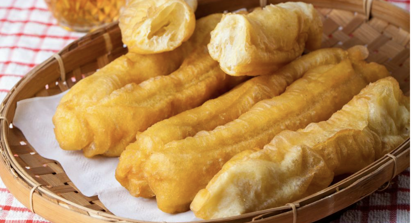
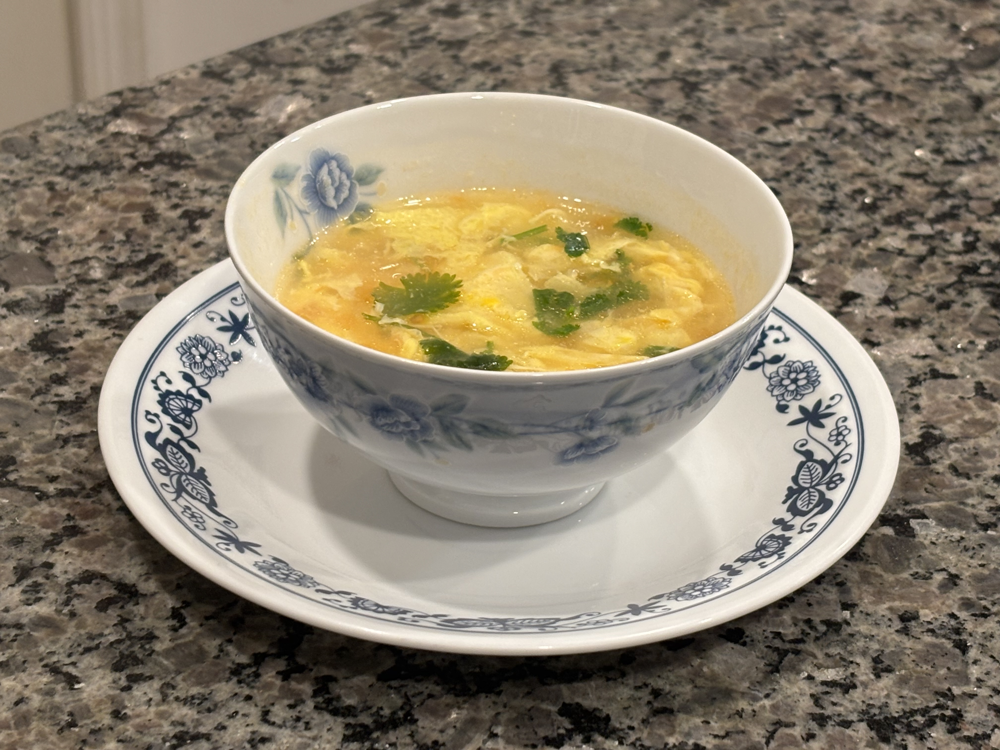
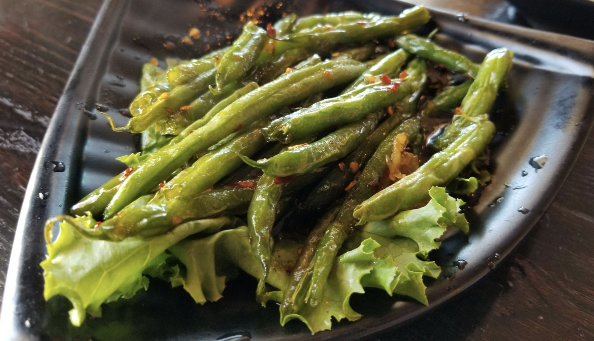

油条配豆浆
Chinese Crullers and Soy Milk
Although typically served as a traditional Chinese breakfast,
Rooted’s Chinese crullers and soy milk has become one of our
most beloved dishes, available for anytime throughout the day.
Our cruller dough and soy milk are prepared with locally sourced
eggs, flour, and soybeans. The dough is rested overnight,
masterfully kneaded by our chefs, and fried in vegetable oil,
to create the perfect, airy, and light crullers. The fresh
soybeans are ground up, filtered, and boiled to produce our
authentic house made soy milk. Finally, pillowy soft Chinese
crullers are served with a bowl of warm, savory soy milk on the
side, mirroring cultural Chinese flavors and evoking a comforting
sense of nostalgia for all.
蛋花汤
Egg Drop Soup
Our vegetarian take on this signature Chinese favorite is widely
loved, and includes housemade vegetable broth, a substitute for
the typical chicken broth, and locally sourced eggs that are fresh
year round. The vegetable broth is first brought to a gentle boil,
while beaten egg is slowly drizzled into the pot and stirred gently
to form the delicate egg ribbons. In the end, a hot, comforting bowl
of egg drop soup is served, maintaining the rich, authentic flavor
that has deservedly become a world renowned dish.


炒竹笋
Bamboo Stir Fry
Bamboo is one of the most widely known trademarks of Chinese culture,
and it’s no surprise that we have integrated the traditional dish
within our unique, vegetarian menu. That being said, our famous stir
fried bamboo brings the flavors of China to you, as we partner with
family-owned bamboo farms from the Tianmu Mountain region in Lin’an,
Zhejiang, or the famous “Southern Bamboo Town”. Our dried bamboo shoots
are imported directly from the source, cut into thinly sliced pieces,
and boiled for hours to achieve the perfect tender, yet crunchy texture.
Then, they are stir fried with other locally sourced vegetables, like
bell peppers and scallions, to create a fragrant aroma and an earthy,
nutty taste.
四季豆
Garlic String Beans
Our string beans and garlic are sourced directly from local farms,
so that our garlic string beans, one of Rooted’s most popular dishes,
are made with the freshest, highest quality ingredients possible.
Sliced garlic and string beans are masterfully pan fried with vegetable
oil, and then stir fried with a touch of soy sauce and various house
seasonings and aromatics, producing the bold, garlicky, and charred
flavor we all know and love.
